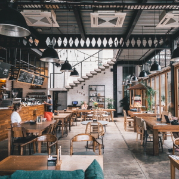
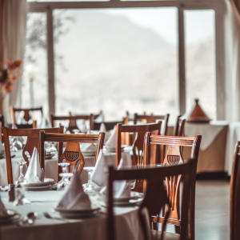
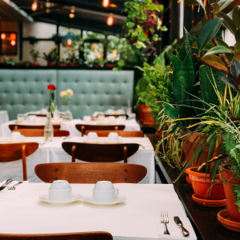

Taniti currently has 11 restaurants: five serve mostly local fish and rice, three serve American-style meals, and two serve Pan-Asian cuisine.

Taniti Restaurant
Taniti restaurant for fine local dining. Local fish and rice.
- Monday through Friday 8am to 8pm
- Saturday 9am to 6pm
- Sunday Closed

Mark's Restaurant
Mark serves American-style meals. Hamburgers and steak.
- Monday through Thursday 8am to 8pm
- Friday Closed
- Saturday and Sunday 9am to 6pm

Pan-Asian Cuisine
Pan-Asian Cuisine serves Pan-Asian Cuisine.
- Monday through Friday 9am to 8pm
- Saturday and Sunday Closed